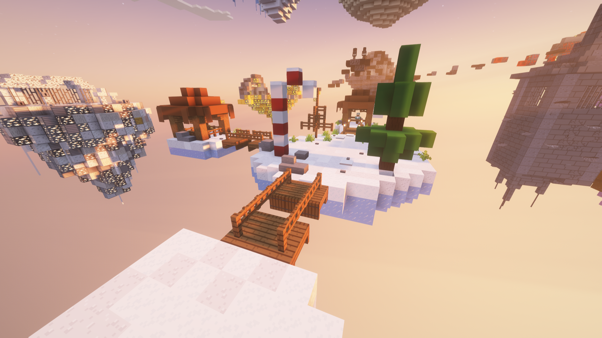

Events in WorldsGen can always be different, as there are multiple types of events. To get started, events are mostly always created by a staff team member. The staff members who mostly handle events are admins up to owners.
Now, to explain the multiple types of events that occur, let’s start with Boost events. Boost events are not events where a staff team or a VIP player uses the /boost command. Boost events are events that have not happened often but have mostly been operated by the creator, Normallion5. These kinds of Boost events involve either a 6+ boost or a smaller boost that lasts for longer periods, mostly 24 hours.
Then there are events with new items or even gear, sometimes with their own island where you can grind. These kinds of events mostly happen during festivals like Christmas and Halloween.
Finally, there are Community events where the WorldsGen community plays together and does something like playing on a different server, competing against others, and trying to win. Or, in WorldsGen, doing something like hide-and-seek or killing Norm with OP gear to win a prize.
And that mostly sums up what an event in WorldsGen is like.
